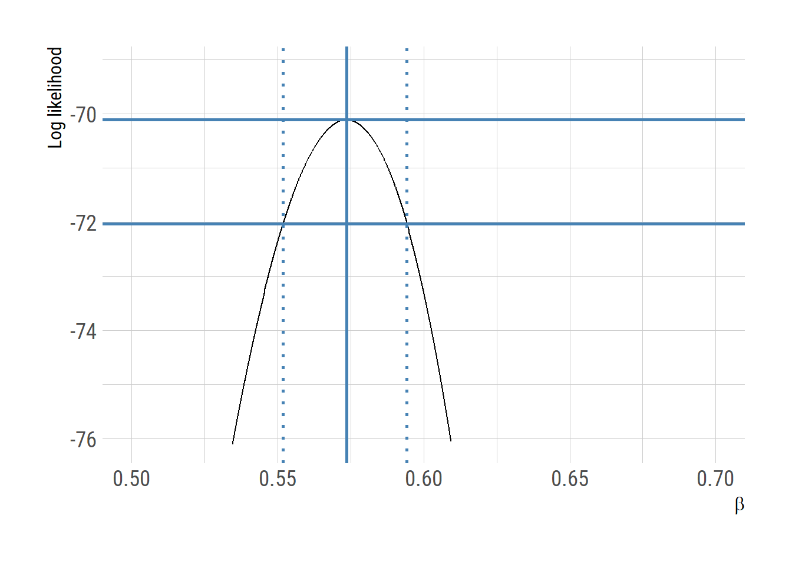

# ODE-based SEIR model
seir <- function(t, y, params) {
S <- y[1]; E <- y[2]; I <- y[3]; R <- y[4]; C <- y[5]
beta <- params["beta"]
sigma <- params["sigma"]
gamma <- params["gamma"]
muSE <- beta * I / (S + E + I + R)
muEI <- sigma
muIR <- gamma
dS <- - muSE*S
dE <- muSE*S - muEI*E
dI <- muEI*E - muIR*I
dR <- muIR*I
dC <- muEI*E ## cumulative symtom onset
return(list(c(dS, dE, dI, dR, dC)))
}Confidence interval using profile likelihood
SEIR
profile likelihood
likelihood ratio
감염병 수리 모형 모수(parameter)의 신뢰구간 (confidence interval)구하기 - profile likelihood
수리 모형을 이용하여 연구를 하게되면 관찰값을 이용하여 모형의 모수를 보정하는 과정을 거치게 된다. 이 과정을 소위 결과 (관찰값)로 부터 원인 (모형)을 알아내는 과정이라 하여 inverse problem 이라 부르기도 한다. 이 글에서는 \(SEIR\) 모형과 중국 우한 에서의 초기 코로나-19 발열자 자료를 이용하여 모형의 모수 (기초재감염지수)와 신뢰구간을 구해본다. 모수는 푸아송 (Poisson) 분포를 이용한 최대 우도 (maximum likelihood) 방법으로 그리고 신뢰구간은 profile likelihood 방법을 사용한다.
아래에 SEIR 모형의 R 코드는 이전에 사용했던 모형에 변수 \(C\)를 추가하였는데 이는 누적 발열자수를 나타내고 일별 발열자 수를 쉽게 구하기 위함이다.
# daily symptomatic case
daily_case <- function(params=NULL) {
y0 <- c(S = 11e6 - 1, E = 0, I = 1, R = 0, C = 1) # initial values (Wuhan population size)
times <- seq(from = 0, to = 35, by = 1)
if(is.null(params)){
params <- c(beta = 2.5/4.5, sigma = 1/5.2, gamma = 1/4.5)
}
out <- ode(y = y0, times = times, func = seir, parms = params)
x <- as.data.frame(out)
n <- nrow(x)
daily = c(0, diff(x[,"C"]))
return (daily)
} 우한에서 발생한 초기 일별 코로나19 환자수는 Kucharski et al. (2020) Lancet 에 보고된 자료를 기반으로 하였다.
wuhan <-
data.frame(date = seq(as.Date("2019-12-13"),
as.Date("2020-01-16"), by = "day"),
case = c(0,0,0,0,0,0,0,2,2,3,0,1,1,0,0,1,0,1,2,
3,4,3,3,1,2,5,6,8,3,8,8,5,17,7,13))일별 발열자수 \(y_t\)가 푸아송 분포를 따른다고 가정하고 우도 함수를 아래와 같이 정의 한다.
\[ y_t \sim \mathrm{Poisson}(Y_t)\] \[\mathcal{L}(\theta) = \prod_{t=1}^{n} f(y_t \vert \theta) = \prod_{t=1}^{n} \frac{Y_t^{y_t} e^{-Y_t}}{y_t!}\]
우도 계산식을 아래와 같이 R로 구현할 수 있다. 물론 우도함수는 수치 안정성을 위해서 log 를 취한 값을 사용하고 (즉 log likelihood) 최적화 알고리듬은 최소값을 찾기 때문에 음의값으로 치환한 negative log likelihood를 사용한다.
negloglik <- function(par) {
params <- c(beta = par, sigma = 1/5.2, gamma = 1/4.5)
model <- daily_case(params = params)
- sum(dpois(x = wuhan$case, lambda = model, log = TRUE)) # sum of negative log likelihood
}SEIR 모형에는 세 개의 모수 (\(\beta, \sigma, \gamma\))가 있는데 \(\sigma, \gamma\)는 각각 잠복기와 회복까지 걸리는 시간을 나타내고 환자들을 관찰하여 그 값을 추정할 수 있는 경우가 많다. 이에 반해 \(\beta\)는 수리 모형의 예측값을 관찰된 유행 곡선과 비교하여 추정한다. 이 과정이 negloglik 함수에 구현된 것이고 optim 함수를 사용하여 negloglik를 최소화하는 \(\beta\)를 구한다.
\[ \hat{\theta} = \underset{\theta}{\mathrm{argmax}}~\{{\mathrm{log} \mathcal{L}(\theta)} \}\]
library(deSolve) # negloglik includes ODE model to be integrated using deSolve
fit <- optim(negloglik, par=c(0.1), method="Brent", lower=0, upper=10)
(theta <- fit$par)[1] 0.5735032gamma <- 1/4.5; (R0 <- theta/gamma)[1] 2.58076595% 신뢰 구간은 Log likelihood 가 asymptotically 아래의 조건을 만족한다는 사실을 이용하여 계산할 수 있다 (Wilks’ theorem). \[ 2 (\mathrm {log} \mathcal {L} (\hat{\theta}) - \mathrm{log}\mathcal{L}(\theta_0)) \sim \chi^2_1\]
prof_b <- expand.grid(b = seq(0.5, 0.7, length = 1000))
prof_b$loglik <- -sapply(prof_b$b, negloglik)
maxloglik <- - fit$value
cutoff <- maxloglik - qchisq(p=0.95,df=1)/2
(limits <- range(subset(prof_b, loglik > cutoff)$b)) # 95% confidence interval[1] 0.5518519 0.5940941library(ggplot2)
theme_set(hrbrthemes::theme_ipsum_rc(base_size=14, subtitle_size=16, axis_title_size=12))
extrafont::loadfonts()
library(dplyr)
prof_b |> as.data.frame() |>
ggplot(aes(b,loglik))+
geom_line()+
geom_vline(xintercept=fit$par, color="steelblue", linewidth=1)+
geom_vline(xintercept=limits, color="steelblue", linetype="dotted", linewidth=1)+
geom_hline(yintercept=maxloglik, color="steelblue", linewidth=1)+
geom_hline(yintercept=cutoff, color="steelblue", linewidth=1)+
scale_y_continuous(limits= c(maxloglik-6, maxloglik+1))+
labs(x=expression(beta), y="Log likelihood")
# ggsave("profile_lik.png", gg, units="in", width=3.4*2, height=2.7*2)bbmle 패키지는 confint 함수로 profile likelihood를 이용하여 신뢰구간을 구하는 방법을 제공해준다.
library(bbmle)
bbfit <- mle2(minuslogl=negloglik, start=list(par=0.1), method="L-BFGS-B", lower=c(par=1e-6), control=list(maxit=5000))
confint(bbfit) 2.5 % 97.5 %
0.5517962 0.5942085